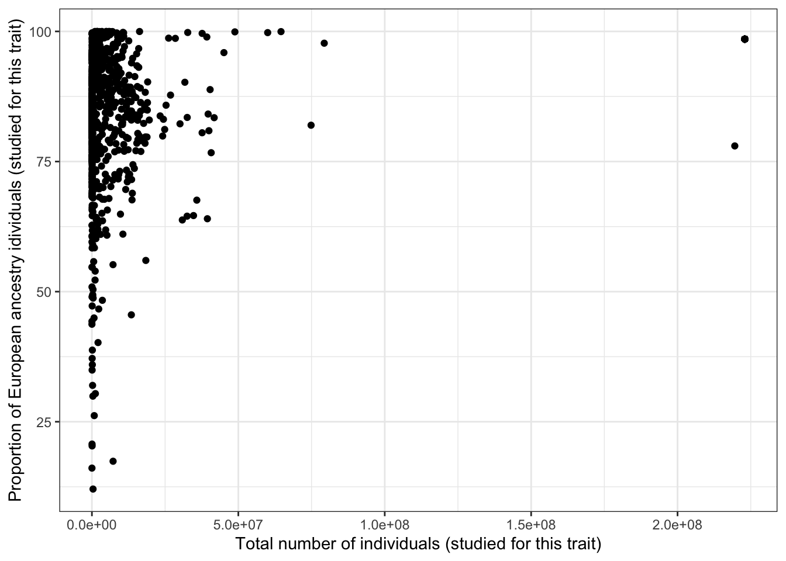
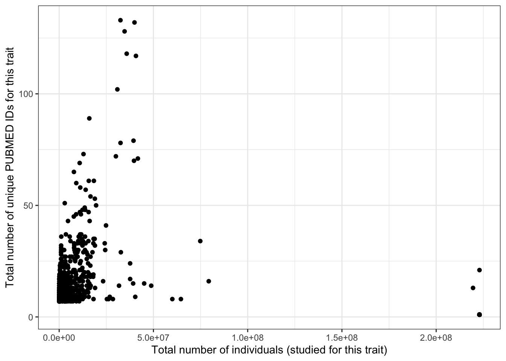
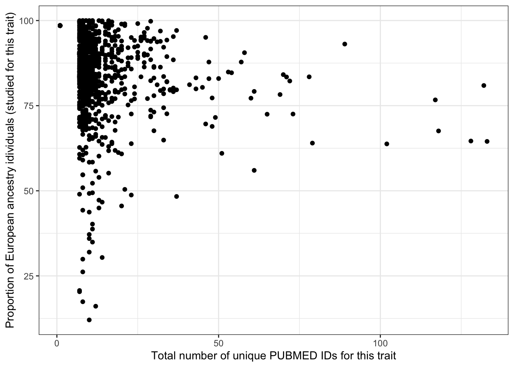

Disease investigated by ancestry
Last updated: 2025-08-23
Checks: 7 0
Knit directory:
genomics_ancest_disease_dispar/
This reproducible R Markdown analysis was created with workflowr (version 1.7.1). The Checks tab describes the reproducibility checks that were applied when the results were created. The Past versions tab lists the development history.
Great! Since the R Markdown file has been committed to the Git repository, you know the exact version of the code that produced these results.
Great job! The global environment was empty. Objects defined in the global environment can affect the analysis in your R Markdown file in unknown ways. For reproduciblity it’s best to always run the code in an empty environment.
The command set.seed(20220216) was run prior to running
the code in the R Markdown file. Setting a seed ensures that any results
that rely on randomness, e.g. subsampling or permutations, are
reproducible.
Great job! Recording the operating system, R version, and package versions is critical for reproducibility.
Nice! There were no cached chunks for this analysis, so you can be confident that you successfully produced the results during this run.
Great job! Using relative paths to the files within your workflowr project makes it easier to run your code on other machines.
Great! You are using Git for version control. Tracking code development and connecting the code version to the results is critical for reproducibility.
The results in this page were generated with repository version 48dd80a. See the Past versions tab to see a history of the changes made to the R Markdown and HTML files.
Note that you need to be careful to ensure that all relevant files for
the analysis have been committed to Git prior to generating the results
(you can use wflow_publish or
wflow_git_commit). workflowr only checks the R Markdown
file, but you know if there are other scripts or data files that it
depends on. Below is the status of the Git repository when the results
were generated:
Ignored files:
Ignored: .Rproj.user/
Ignored: data/gwas_catalog/
Ignored: output/gwas_study_info_cohort_corrected.csv
Ignored: output/gwas_study_info_trait_corrected.csv
Untracked files:
Untracked: .DS_Store
Untracked: data/.DS_Store
Untracked: gwas_time.pdf
Untracked: renv/
Unstaged changes:
Modified: .Rprofile
Note that any generated files, e.g. HTML, png, CSS, etc., are not included in this status report because it is ok for generated content to have uncommitted changes.
These are the previous versions of the repository in which changes were
made to the R Markdown
(analysis/disease_inves_by_ancest.Rmd) and HTML
(docs/disease_inves_by_ancest.html) files. If you’ve
configured a remote Git repository (see ?wflow_git_remote),
click on the hyperlinks in the table below to view the files as they
were in that past version.
| File | Version | Author | Date | Message |
|---|---|---|---|---|
| Rmd | 48dd80a | IJbeasley | 2025-08-23 | Update proportion ancestry investigated by disease |
| html | 42e854b | IJbeasley | 2025-08-21 | Build site. |
| Rmd | fa9a4da | IJbeasley | 2025-08-21 | Starting test of relationship between proportion european and total sample size |
| html | f5087d2 | IJBeasley | 2025-07-30 | Build site. |
| Rmd | 72172e3 | IJBeasley | 2025-07-30 | Split page into disease by ancest |
| html | 2fd5755 | Isobel Beasley | 2022-02-16 | Build site. |
| Rmd | 7347b5d | Isobel Beasley | 2022-02-16 | Add initial plotting using gwas cat stats |
1 Set up
library(dplyr)
library(data.table)
library(ggplot2)
source(here::here("code/custom_plotting.R"))1.1 Load data
# gwas_study_info = data.table::fread("data/gwas_catalog/gwas-catalog-v1.0.3-studies-r2022-02-02.tsv",
# sep = "\t",
# quote = "")
gwas_study_info <- fread(here::here("output/gwas_study_info_trait_corrected.csv"))
gwas_ancest_info <- fread(here::here("data/gwas_catalog/gwas-catalog-v1.0.3.1-ancestries-r2025-07-21.tsv"),
sep = "\t", quote = "")1.2 Basic data cleaning
# fixing the column names
gwas_study_info = gwas_study_info |>
dplyr::rename_with(~ gsub(" ", "_", .x))
gwas_ancest_info = gwas_ancest_info |>
dplyr::rename_with(~ gsub(" ", "_", .x))
# making sure arranged by DATE (oldest at the top)
gwas_ancest_info = gwas_ancest_info |>
dplyr::arrange(DATE)
gwas_study_info = gwas_study_info |>
dplyr::arrange(DATE)1.3 NA for number of individuals
# 44 studies / 44 rows
gwas_ancest_info |>
dplyr::filter(is.na(NUMBER_OF_INDIVIDUALS)) |>
nrow()[1] 44# from only 24 gwas papers
gwas_ancest_info |>
dplyr::filter(is.na(NUMBER_OF_INDIVIDUALS)) |>
select(PUBMED_ID) |>
distinct() |>
nrow()[1] 24gwas_ancest_info |>
dplyr::filter(PUBMED_ID == 28679651) |>
select(INITIAL_SAMPLE_DESCRIPTION,
REPLICATION_SAMPLE_DESCRIPTION,
BROAD_ANCESTRAL_CATEGORY) |>
distinct() INITIAL_SAMPLE_DESCRIPTION REPLICATION_SAMPLE_DESCRIPTION
<char> <char>
1: 404 cases, controls <NA>
2: 194 cases, controls <NA>
3: 426 cases, controls <NA>
4: 85 cases, controls <NA>
5: 535 cases, controls <NA>
6: 345 cases, controls <NA>
7: 835 cases, controls <NA>
8: 844 cases, controls <NA>
9: 447 cases, controls <NA>
BROAD_ANCESTRAL_CATEGORY
<char>
1: NR
2: NR
3: NR
4: NR
5: NR
6: NR
7: NR
8: NR
9: NR# 28679651 - problem seems to be that number of controls per disease not specifically listed
# see https://pubmed.ncbi.nlm.nih.gov/28679651/
# although paper they cite as where data comes from (https://www.nature.com/articles/leu2016387#Tab1)
# discloses: 1229 AL amyloidosis patients from Germany, UK and Italy, and 7526 healthy local controls1.3.1 Filter out NA number of individuals
gwas_ancest_info =
gwas_ancest_info |>
dplyr::filter(!is.na(NUMBER_OF_INDIVIDUALS))2 Top disease traits
The traits with the most number of pubmed ids are:
n_studies_trait = gwas_study_info |>
dplyr::select(MAPPED_TRAIT, MAPPED_TRAIT_URI, PUBMED_ID) |>
dplyr::distinct() |>
dplyr::group_by(MAPPED_TRAIT, MAPPED_TRAIT_URI) |>
dplyr::summarise(n_studies = dplyr::n()) |>
dplyr::arrange(desc(n_studies))`summarise()` has grouped output by 'MAPPED_TRAIT'. You can override using the
`.groups` argument.head(n_studies_trait)# A tibble: 6 × 3
# Groups: MAPPED_TRAIT [6]
MAPPED_TRAIT MAPPED_TRAIT_URI n_studies
<chr> <chr> <int>
1 high density lipoprotein cholesterol measurement http://www.ebi.ac.… 133
2 body mass index http://www.ebi.ac.… 132
3 triglyceride measurement http://www.ebi.ac.… 128
4 low density lipoprotein cholesterol measurement http://www.ebi.ac.… 118
5 type 2 diabetes mellitus http://purl.obolib… 117
6 total cholesterol measurement http://www.ebi.ac.… 1023 Make ancestry groups
Here we make the column ‘ancestry_group’ in the gwas_study_info datasets, ‘ancestry_group’ defines the broad ancestry group (like in Martin et al. 2019, European, Greater Middle Eastern etc.) that each group of individuals belongs to.
grouped_ancest = character()
for(study_ancest in unique(gwas_ancest_info$BROAD_ANCESTRAL_CATEGORY)){
grouped_ancest[study_ancest] = group_ancestry_fn(study_ancest)
}
grouped_ancest_map = tibble(
BROAD_ANCESTRAL_CATEGORY = names(grouped_ancest),
ancestry_group = unname(grouped_ancest)
)
print("See some example mapping between BROAD_ANCESTRAL_CATEGORY and ancestry_group")[1] "See some example mapping between BROAD_ANCESTRAL_CATEGORY and ancestry_group"print(dplyr::slice_sample(grouped_ancest_map, n = 5))# A tibble: 5 × 2
BROAD_ANCESTRAL_CATEGORY ancestry_group
<chr> <chr>
1 European, Central Asian Multiple
2 European, African American or Afro-Caribbean, NR, Asian unspec… Multiple
3 South Asian, European, East Asian, African American or Afro-Ca… Multiple
4 Hispanic or Latin American Hispanic/Lati…
5 European, African American or Afro-Caribbean, Hispanic or Lati… Multiple gwas_ancest_info = dplyr::left_join(
gwas_ancest_info,
grouped_ancest_map,
by = "BROAD_ANCESTRAL_CATEGORY")
gwas_ancest_info = gwas_ancest_info |>
dplyr::mutate(ancestry_group = factor(ancestry_group, levels = ancestry_levels))3.1 Check: How many individuals in each ancestry group?
Expecting highest to be in European
total_gwas_n =
gwas_ancest_info$NUMBER_OF_INDIVIDUALS |> sum(na.rm = T)
print("Total numbers (in millions) per ancestry group")[1] "Total numbers (in millions) per ancestry group"gwas_ancest_info |>
dplyr::group_by(ancestry_group) |>
dplyr::summarise(n = sum(NUMBER_OF_INDIVIDUALS, na.rm = TRUE)/10^6) |>
dplyr::mutate(prop = n* 10^6/total_gwas_n) |>
dplyr::arrange(desc(n)) # A tibble: 9 × 3
ancestry_group n prop
<fct> <dbl> <dbl>
1 European 9122. 0.880
2 African 408. 0.0393
3 Asian 313. 0.0302
4 Multiple 186. 0.0180
5 Hispanic/Latin American 179. 0.0172
6 Not reported 149. 0.0144
7 Middle Eastern 4.47 0.000431
8 Other 2.01 0.000194
9 Oceanic 0.134 0.00001303.2 Plot number of individuals per ancestry group over time
gwas_ancest_info |>
dplyr::group_by(ancestry_group) |>
dplyr::mutate(ancest_cumsum = cumsum(as.numeric(NUMBER_OF_INDIVIDUALS))) |>
add_final_totals() |>
# select(DATE, ancest_cumsum, ancestry_group, NUMBER_OF_INDIVIDUALS) |>
ggplot(aes(x=DATE,
y=ancest_cumsum/(10^6),
fill = ancestry_group
)
) +
geom_area(position = 'stack') +
scale_x_date(date_labels = '%Y',
date_breaks = "2 years"
) +
theme_classic() +
labs(x = "Year",
y = "Individuals in GWAS catalog (millions)") +
scale_fill_manual(values = ancestry_colors, name='Ancestry group') 4 Plot number of individuals per ancestry group for a single trait
4.1 Set up - add trait information to ancestry information
gwas_ancest_info =
left_join(
gwas_ancest_info,
gwas_study_info |> select(STUDY_ACCESSION,
COHORT,
MAPPED_TRAIT),
by = "STUDY_ACCESSION"
)4.2 Select trait
gwas_ancest_info_plot =
gwas_ancest_info %>%
filter(!is.na(NUMBER_OF_INDIVIDUALS)) |>
filter(MAPPED_TRAIT == 'high density lipoprotein cholesterol measurement')
print("Total numbers (in millions) per ancestry group - for high density lipoprotein cholesterol measurement")[1] "Total numbers (in millions) per ancestry group - for high density lipoprotein cholesterol measurement"gwas_ancest_info_plot %>%
group_by(ancestry_group) %>%
summarise(n = sum(NUMBER_OF_INDIVIDUALS, na.rm = TRUE)/10^6)# A tibble: 9 × 2
ancestry_group n
<fct> <dbl>
1 European 21.0
2 Asian 3.55
3 African 1.45
4 Hispanic/Latin American 0.771
5 Middle Eastern 0.0172
6 Oceanic 0.00965
7 Other 0.00751
8 Multiple 5.21
9 Not reported 0.517 4.3 Plot
gwas_ancest_info_plot =
gwas_ancest_info_plot %>%
group_by(ancestry_group) %>%
mutate(ancest_cumsum = cumsum(as.numeric(NUMBER_OF_INDIVIDUALS)))
gwas_ancest_info_plot = add_final_totals(gwas_ancest_info_plot)
gwas_ancest_info_plot |>
ggplot(aes(x=DATE, y=ancest_cumsum/(10^6), fill = ancestry_group)) +
geom_area(position = 'stack') +
scale_x_date(date_labels = '%Y', date_breaks = "1 years") +
theme_classic() +
labs(x = "Year", y = "Individuals in GWAS catalog (millions)") +
scale_fill_manual(values = ancestry_colors, name='Ancestry group') 
5 Proportion European per trait
5.1 Proportion European overall
euro_n = gwas_ancest_info |>
filter(ancestry_group == "European") |>
pull(NUMBER_OF_INDIVIDUALS) |>
sum(na.rm = T)
total_n = gwas_ancest_info |>
pull(NUMBER_OF_INDIVIDUALS) |>
sum(na.rm = T)
100 * euro_n / total_n[1] 88.02662prop_euro = vector()
total_n_vec = vector()5.2 Proportion European per trait
for(trait in n_studies_trait$MAPPED_TRAIT[1:1000]){
euro_n = gwas_ancest_info |>
filter(ancestry_group == "European") |>
filter(MAPPED_TRAIT == trait) |>
pull(NUMBER_OF_INDIVIDUALS) |>
sum(na.rm = T)
total_n = gwas_ancest_info |>
filter(MAPPED_TRAIT == trait) |>
pull(NUMBER_OF_INDIVIDUALS) |>
sum(na.rm = T)
prop_euro[trait] = 100 * euro_n / total_n
total_n_vec[trait] = total_n
}
prop_euro_df = data.frame(prop_euro = prop_euro,
trait = names(prop_euro),
total_n = total_n_vec)
prop_euro_df = left_join(prop_euro_df,
n_studies_trait |> rename(trait = MAPPED_TRAIT),
by = "trait")
prop_euro_df$prop_euro |> summary() Min. 1st Qu. Median Mean 3rd Qu. Max.
12.07 83.33 91.64 89.13 98.52 100.00 prop_euro_df |> slice_min(prop_euro, n = 5) prop_euro trait total_n
1 12.06720 adolescent idiopathic scoliosis 386693
2 16.09211 response to antipsychotic drug 14678
3 17.40991 dilated cardiomyopathy 7229158
4 20.35347 axial length measurement 65861
5 20.70827 Cleft palate 45209
MAPPED_TRAIT_URI n_studies
1 http://www.ebi.ac.uk/efo/EFO_0005423 10
2 http://purl.obolibrary.org/obo/GO_0097332 12
3 http://www.ebi.ac.uk/efo/EFO_0000407 8
4 http://www.ebi.ac.uk/efo/EFO_0005318 7
5 http://purl.obolibrary.org/obo/HP_0000175 7prop_euro_df |> slice_max(prop_euro, n =5 ) prop_euro trait total_n
1 100.00000 testicular carcinoma 1796522
2 100.00000 self reported educational attainment 4908190
3 99.99760 health study participation 5873120
4 99.99201 hair color 1063503
5 99.99147 base metabolic rate measurement 3413130
MAPPED_TRAIT_URI n_studies
1 http://www.ebi.ac.uk/efo/EFO_0005088 11
2 http://www.ebi.ac.uk/efo/EFO_0004784 9
3 http://www.ebi.ac.uk/efo/EFO_0010130 8
4 http://www.ebi.ac.uk/efo/EFO_0003924 10
5 http://www.ebi.ac.uk/efo/EFO_0007777 8prop_euro_df |> slice_max(total_n, n = 5) prop_euro trait total_n
1 98.51939 blood protein amount 222971287
2 98.51939 blood protein amount 222971287
3 98.51939 blood protein amount 222971287
4 98.51939 blood protein amount 222971287
5 98.51939 blood protein amount 222971287
6 98.51939 blood protein amount 222971287
7 98.51939 blood protein amount 222971287
8 98.51939 blood protein amount 222971287
9 98.51939 blood protein amount 222971287
10 98.51939 blood protein amount 222971287
11 98.51939 blood protein amount 222971287
12 98.51939 blood protein amount 222971287
13 98.51939 blood protein amount 222971287
14 98.51939 blood protein amount 222971287
15 98.51939 blood protein amount 222971287
16 98.51939 blood protein amount 222971287
17 98.51939 blood protein amount 222971287
18 98.51939 blood protein amount 222971287
19 98.51939 blood protein amount 222971287
20 98.51939 blood protein amount 222971287
21 98.51939 blood protein amount 222971287
22 98.51939 blood protein amount 222971287
23 98.51939 blood protein amount 222971287
24 98.51939 blood protein amount 222971287
25 98.51939 blood protein amount 222971287
26 98.51939 blood protein amount 222971287
27 98.51939 blood protein amount 222971287
28 98.51939 blood protein amount 222971287
29 98.51939 blood protein amount 222971287
30 98.51939 blood protein amount 222971287
31 98.51939 blood protein amount 222971287
32 98.51939 blood protein amount 222971287
33 98.51939 blood protein amount 222971287
34 98.51939 blood protein amount 222971287
35 98.51939 blood protein amount 222971287
36 98.51939 blood protein amount 222971287
37 98.51939 blood protein amount 222971287
38 98.51939 blood protein amount 222971287
39 98.51939 blood protein amount 222971287
40 98.51939 blood protein amount 222971287
41 98.51939 blood protein amount 222971287
42 98.51939 blood protein amount 222971287
43 98.51939 blood protein amount 222971287
44 98.51939 blood protein amount 222971287
45 98.51939 blood protein amount 222971287
46 98.51939 blood protein amount 222971287
47 98.51939 blood protein amount 222971287
48 98.51939 blood protein amount 222971287
49 98.51939 blood protein amount 222971287
50 98.51939 blood protein amount 222971287
51 98.51939 blood protein amount 222971287
52 98.51939 blood protein amount 222971287
53 98.51939 blood protein amount 222971287
54 98.51939 blood protein amount 222971287
55 98.51939 blood protein amount 222971287
56 98.51939 blood protein amount 222971287
57 98.51939 blood protein amount 222971287
58 98.51939 blood protein amount 222971287
59 98.51939 blood protein amount 222971287
60 98.51939 blood protein amount 222971287
61 98.51939 blood protein amount 222971287
62 98.51939 blood protein amount 222971287
63 98.51939 blood protein amount 222971287
64 98.51939 blood protein amount 222971287
65 98.51939 blood protein amount 222971287
66 98.51939 blood protein amount 222971287
67 98.51939 blood protein amount 222971287
68 98.51939 blood protein amount 222971287
69 98.51939 blood protein amount 222971287
70 98.51939 blood protein amount 222971287
71 98.51939 blood protein amount 222971287
72 98.51939 blood protein amount 222971287
73 98.51939 blood protein amount 222971287
74 98.51939 blood protein amount 222971287
75 98.51939 blood protein amount 222971287
76 98.51939 blood protein amount 222971287
77 98.51939 blood protein amount 222971287
78 98.51939 blood protein amount 222971287
79 98.51939 blood protein amount 222971287
80 98.51939 blood protein amount 222971287
81 98.51939 blood protein amount 222971287
82 98.51939 blood protein amount 222971287
83 98.51939 blood protein amount 222971287
84 98.51939 blood protein amount 222971287
85 98.51939 blood protein amount 222971287
86 98.51939 blood protein amount 222971287
87 98.51939 blood protein amount 222971287
88 98.51939 blood protein amount 222971287
89 98.51939 blood protein amount 222971287
90 98.51939 blood protein amount 222971287
91 98.51939 blood protein amount 222971287
92 98.51939 blood protein amount 222971287
93 98.51939 blood protein amount 222971287
94 98.51939 blood protein amount 222971287
95 98.51939 blood protein amount 222971287
96 98.51939 blood protein amount 222971287
97 98.51939 blood protein amount 222971287
98 98.51939 blood protein amount 222971287
99 98.51939 blood protein amount 222971287
100 98.51939 blood protein amount 222971287
101 98.51939 blood protein amount 222971287
102 98.51939 blood protein amount 222971287
103 98.51939 blood protein amount 222971287
104 98.51939 blood protein amount 222971287
105 98.51939 blood protein amount 222971287
106 98.51939 blood protein amount 222971287
107 98.51939 blood protein amount 222971287
108 98.51939 blood protein amount 222971287
109 98.51939 blood protein amount 222971287
110 98.51939 blood protein amount 222971287
111 98.51939 blood protein amount 222971287
112 98.51939 blood protein amount 222971287
113 98.51939 blood protein amount 222971287
114 98.51939 blood protein amount 222971287
115 98.51939 blood protein amount 222971287
116 98.51939 blood protein amount 222971287
117 98.51939 blood protein amount 222971287
118 98.51939 blood protein amount 222971287
119 98.51939 blood protein amount 222971287
120 98.51939 blood protein amount 222971287
121 98.51939 blood protein amount 222971287
122 98.51939 blood protein amount 222971287
123 98.51939 blood protein amount 222971287
124 98.51939 blood protein amount 222971287
125 98.51939 blood protein amount 222971287
126 98.51939 blood protein amount 222971287
127 98.51939 blood protein amount 222971287
128 98.51939 blood protein amount 222971287
129 98.51939 blood protein amount 222971287
130 98.51939 blood protein amount 222971287
131 98.51939 blood protein amount 222971287
132 98.51939 blood protein amount 222971287
133 98.51939 blood protein amount 222971287
134 98.51939 blood protein amount 222971287
135 98.51939 blood protein amount 222971287
136 98.51939 blood protein amount 222971287
137 98.51939 blood protein amount 222971287
138 98.51939 blood protein amount 222971287
139 98.51939 blood protein amount 222971287
140 98.51939 blood protein amount 222971287
141 98.51939 blood protein amount 222971287
142 98.51939 blood protein amount 222971287
143 98.51939 blood protein amount 222971287
144 98.51939 blood protein amount 222971287
145 98.51939 blood protein amount 222971287
146 98.51939 blood protein amount 222971287
147 98.51939 blood protein amount 222971287
148 98.51939 blood protein amount 222971287
149 98.51939 blood protein amount 222971287
150 98.51939 blood protein amount 222971287
151 98.51939 blood protein amount 222971287
152 98.51939 blood protein amount 222971287
153 98.51939 blood protein amount 222971287
154 98.51939 blood protein amount 222971287
155 98.51939 blood protein amount 222971287
156 98.51939 blood protein amount 222971287
157 98.51939 blood protein amount 222971287
158 98.51939 blood protein amount 222971287
159 98.51939 blood protein amount 222971287
160 98.51939 blood protein amount 222971287
161 98.51939 blood protein amount 222971287
162 98.51939 blood protein amount 222971287
163 98.51939 blood protein amount 222971287
164 98.51939 blood protein amount 222971287
165 98.51939 blood protein amount 222971287
166 98.51939 blood protein amount 222971287
167 98.51939 blood protein amount 222971287
168 98.51939 blood protein amount 222971287
169 98.51939 blood protein amount 222971287
170 98.51939 blood protein amount 222971287
171 98.51939 blood protein amount 222971287
172 98.51939 blood protein amount 222971287
173 98.51939 blood protein amount 222971287
174 98.51939 blood protein amount 222971287
175 98.51939 blood protein amount 222971287
176 98.51939 blood protein amount 222971287
177 98.51939 blood protein amount 222971287
178 98.51939 blood protein amount 222971287
179 98.51939 blood protein amount 222971287
180 98.51939 blood protein amount 222971287
181 98.51939 blood protein amount 222971287
182 98.51939 blood protein amount 222971287
183 98.51939 blood protein amount 222971287
184 98.51939 blood protein amount 222971287
185 98.51939 blood protein amount 222971287
186 98.51939 blood protein amount 222971287
187 98.51939 blood protein amount 222971287
188 98.51939 blood protein amount 222971287
189 98.51939 blood protein amount 222971287
190 98.51939 blood protein amount 222971287
191 98.51939 blood protein amount 222971287
192 98.51939 blood protein amount 222971287
193 98.51939 blood protein amount 222971287
194 98.51939 blood protein amount 222971287
195 98.51939 blood protein amount 222971287
196 98.51939 blood protein amount 222971287
197 98.51939 blood protein amount 222971287
198 98.51939 blood protein amount 222971287
199 98.51939 blood protein amount 222971287
200 98.51939 blood protein amount 222971287
201 98.51939 blood protein amount 222971287
202 98.51939 blood protein amount 222971287
203 98.51939 blood protein amount 222971287
204 98.51939 blood protein amount 222971287
205 98.51939 blood protein amount 222971287
206 98.51939 blood protein amount 222971287
207 98.51939 blood protein amount 222971287
208 98.51939 blood protein amount 222971287
209 98.51939 blood protein amount 222971287
210 98.51939 blood protein amount 222971287
211 98.51939 blood protein amount 222971287
212 98.51939 blood protein amount 222971287
213 98.51939 blood protein amount 222971287
214 98.51939 blood protein amount 222971287
215 98.51939 blood protein amount 222971287
216 98.51939 blood protein amount 222971287
217 98.51939 blood protein amount 222971287
218 98.51939 blood protein amount 222971287
219 98.51939 blood protein amount 222971287
220 98.51939 blood protein amount 222971287
221 98.51939 blood protein amount 222971287
222 98.51939 blood protein amount 222971287
223 98.51939 blood protein amount 222971287
224 98.51939 blood protein amount 222971287
225 98.51939 blood protein amount 222971287
226 98.51939 blood protein amount 222971287
227 98.51939 blood protein amount 222971287
228 98.51939 blood protein amount 222971287
229 98.51939 blood protein amount 222971287
230 98.51939 blood protein amount 222971287
231 98.51939 blood protein amount 222971287
232 98.51939 blood protein amount 222971287
233 98.51939 blood protein amount 222971287
234 98.51939 blood protein amount 222971287
235 98.51939 blood protein amount 222971287
236 98.51939 blood protein amount 222971287
237 98.51939 blood protein amount 222971287
238 98.51939 blood protein amount 222971287
239 98.51939 blood protein amount 222971287
240 98.51939 blood protein amount 222971287
241 98.51939 blood protein amount 222971287
242 98.51939 blood protein amount 222971287
243 98.51939 blood protein amount 222971287
244 98.51939 blood protein amount 222971287
245 98.51939 blood protein amount 222971287
246 98.51939 blood protein amount 222971287
247 98.51939 blood protein amount 222971287
248 98.51939 blood protein amount 222971287
249 98.51939 blood protein amount 222971287
250 98.51939 blood protein amount 222971287
251 98.51939 blood protein amount 222971287
252 98.51939 blood protein amount 222971287
253 98.51939 blood protein amount 222971287
254 98.51939 blood protein amount 222971287
255 98.51939 blood protein amount 222971287
256 98.51939 blood protein amount 222971287
257 98.51939 blood protein amount 222971287
258 98.51939 blood protein amount 222971287
259 98.51939 blood protein amount 222971287
260 98.51939 blood protein amount 222971287
261 98.51939 blood protein amount 222971287
262 98.51939 blood protein amount 222971287
263 98.51939 blood protein amount 222971287
264 98.51939 blood protein amount 222971287
265 98.51939 blood protein amount 222971287
266 98.51939 blood protein amount 222971287
267 98.51939 blood protein amount 222971287
268 98.51939 blood protein amount 222971287
269 98.51939 blood protein amount 222971287
270 98.51939 blood protein amount 222971287
271 98.51939 blood protein amount 222971287
272 98.51939 blood protein amount 222971287
273 98.51939 blood protein amount 222971287
274 98.51939 blood protein amount 222971287
275 98.51939 blood protein amount 222971287
276 98.51939 blood protein amount 222971287
277 98.51939 blood protein amount 222971287
278 98.51939 blood protein amount 222971287
279 98.51939 blood protein amount 222971287
280 98.51939 blood protein amount 222971287
281 98.51939 blood protein amount 222971287
282 98.51939 blood protein amount 222971287
283 98.51939 blood protein amount 222971287
284 98.51939 blood protein amount 222971287
285 98.51939 blood protein amount 222971287
286 98.51939 blood protein amount 222971287
287 98.51939 blood protein amount 222971287
288 98.51939 blood protein amount 222971287
289 98.51939 blood protein amount 222971287
290 98.51939 blood protein amount 222971287
291 98.51939 blood protein amount 222971287
292 98.51939 blood protein amount 222971287
293 98.51939 blood protein amount 222971287
294 98.51939 blood protein amount 222971287
295 98.51939 blood protein amount 222971287
296 98.51939 blood protein amount 222971287
297 98.51939 blood protein amount 222971287
298 98.51939 blood protein amount 222971287
299 98.51939 blood protein amount 222971287
300 98.51939 blood protein amount 222971287
301 98.51939 blood protein amount 222971287
302 98.51939 blood protein amount 222971287
303 98.51939 blood protein amount 222971287
304 98.51939 blood protein amount 222971287
305 98.51939 blood protein amount 222971287
306 98.51939 blood protein amount 222971287
307 98.51939 blood protein amount 222971287
308 98.51939 blood protein amount 222971287
309 98.51939 blood protein amount 222971287
310 98.51939 blood protein amount 222971287
311 98.51939 blood protein amount 222971287
312 98.51939 blood protein amount 222971287
313 98.51939 blood protein amount 222971287
314 98.51939 blood protein amount 222971287
315 98.51939 blood protein amount 222971287
316 98.51939 blood protein amount 222971287
317 98.51939 blood protein amount 222971287
318 98.51939 blood protein amount 222971287
319 98.51939 blood protein amount 222971287
320 98.51939 blood protein amount 222971287
321 98.51939 blood protein amount 222971287
322 98.51939 blood protein amount 222971287
323 98.51939 blood protein amount 222971287
324 98.51939 blood protein amount 222971287
325 98.51939 blood protein amount 222971287
326 98.51939 blood protein amount 222971287
327 98.51939 blood protein amount 222971287
328 98.51939 blood protein amount 222971287
329 98.51939 blood protein amount 222971287
330 98.51939 blood protein amount 222971287
331 98.51939 blood protein amount 222971287
332 98.51939 blood protein amount 222971287
333 98.51939 blood protein amount 222971287
334 98.51939 blood protein amount 222971287
335 98.51939 blood protein amount 222971287
336 98.51939 blood protein amount 222971287
337 98.51939 blood protein amount 222971287
338 98.51939 blood protein amount 222971287
339 98.51939 blood protein amount 222971287
340 98.51939 blood protein amount 222971287
341 98.51939 blood protein amount 222971287
342 98.51939 blood protein amount 222971287
343 98.51939 blood protein amount 222971287
344 98.51939 blood protein amount 222971287
345 98.51939 blood protein amount 222971287
346 98.51939 blood protein amount 222971287
347 98.51939 blood protein amount 222971287
348 98.51939 blood protein amount 222971287
349 98.51939 blood protein amount 222971287
350 98.51939 blood protein amount 222971287
351 98.51939 blood protein amount 222971287
352 98.51939 blood protein amount 222971287
353 98.51939 blood protein amount 222971287
354 98.51939 blood protein amount 222971287
355 98.51939 blood protein amount 222971287
356 98.51939 blood protein amount 222971287
357 98.51939 blood protein amount 222971287
358 98.51939 blood protein amount 222971287
359 98.51939 blood protein amount 222971287
360 98.51939 blood protein amount 222971287
361 98.51939 blood protein amount 222971287
362 98.51939 blood protein amount 222971287
363 98.51939 blood protein amount 222971287
364 98.51939 blood protein amount 222971287
365 98.51939 blood protein amount 222971287
366 98.51939 blood protein amount 222971287
367 98.51939 blood protein amount 222971287
368 98.51939 blood protein amount 222971287
369 98.51939 blood protein amount 222971287
370 98.51939 blood protein amount 222971287
371 98.51939 blood protein amount 222971287
372 98.51939 blood protein amount 222971287
373 98.51939 blood protein amount 222971287
374 98.51939 blood protein amount 222971287
375 98.51939 blood protein amount 222971287
376 98.51939 blood protein amount 222971287
377 98.51939 blood protein amount 222971287
378 98.51939 blood protein amount 222971287
379 98.51939 blood protein amount 222971287
380 98.51939 blood protein amount 222971287
381 98.51939 blood protein amount 222971287
382 98.51939 blood protein amount 222971287
383 98.51939 blood protein amount 222971287
384 98.51939 blood protein amount 222971287
385 98.51939 blood protein amount 222971287
386 98.51939 blood protein amount 222971287
387 98.51939 blood protein amount 222971287
388 98.51939 blood protein amount 222971287
389 98.51939 blood protein amount 222971287
390 98.51939 blood protein amount 222971287
391 98.51939 blood protein amount 222971287
392 98.51939 blood protein amount 222971287
393 98.51939 blood protein amount 222971287
394 98.51939 blood protein amount 222971287
395 98.51939 blood protein amount 222971287
396 98.51939 blood protein amount 222971287
397 98.51939 blood protein amount 222971287
398 98.51939 blood protein amount 222971287
399 98.51939 blood protein amount 222971287
400 98.51939 blood protein amount 222971287
401 98.51939 blood protein amount 222971287
402 98.51939 blood protein amount 222971287
403 98.51939 blood protein amount 222971287
404 98.51939 blood protein amount 222971287
405 98.51939 blood protein amount 222971287
406 98.51939 blood protein amount 222971287
407 98.51939 blood protein amount 222971287
408 98.51939 blood protein amount 222971287
409 98.51939 blood protein amount 222971287
410 98.51939 blood protein amount 222971287
411 98.51939 blood protein amount 222971287
412 98.51939 blood protein amount 222971287
413 98.51939 blood protein amount 222971287
414 98.51939 blood protein amount 222971287
415 98.51939 blood protein amount 222971287
416 98.51939 blood protein amount 222971287
417 98.51939 blood protein amount 222971287
418 98.51939 blood protein amount 222971287
419 98.51939 blood protein amount 222971287
420 98.51939 blood protein amount 222971287
421 98.51939 blood protein amount 222971287
422 98.51939 blood protein amount 222971287
423 98.51939 blood protein amount 222971287
424 98.51939 blood protein amount 222971287
425 98.51939 blood protein amount 222971287
426 98.51939 blood protein amount 222971287
427 98.51939 blood protein amount 222971287
428 98.51939 blood protein amount 222971287
429 98.51939 blood protein amount 222971287
430 98.51939 blood protein amount 222971287
431 98.51939 blood protein amount 222971287
432 98.51939 blood protein amount 222971287
433 98.51939 blood protein amount 222971287
434 98.51939 blood protein amount 222971287
435 98.51939 blood protein amount 222971287
436 98.51939 blood protein amount 222971287
437 98.51939 blood protein amount 222971287
438 98.51939 blood protein amount 222971287
439 98.51939 blood protein amount 222971287
440 98.51939 blood protein amount 222971287
441 98.51939 blood protein amount 222971287
442 98.51939 blood protein amount 222971287
443 98.51939 blood protein amount 222971287
444 98.51939 blood protein amount 222971287
445 98.51939 blood protein amount 222971287
446 98.51939 blood protein amount 222971287
447 98.51939 blood protein amount 222971287
448 98.51939 blood protein amount 222971287
449 98.51939 blood protein amount 222971287
450 98.51939 blood protein amount 222971287
451 98.51939 blood protein amount 222971287
452 98.51939 blood protein amount 222971287
453 98.51939 blood protein amount 222971287
454 98.51939 blood protein amount 222971287
455 98.51939 blood protein amount 222971287
456 98.51939 blood protein amount 222971287
457 98.51939 blood protein amount 222971287
458 98.51939 blood protein amount 222971287
459 98.51939 blood protein amount 222971287
460 98.51939 blood protein amount 222971287
461 98.51939 blood protein amount 222971287
462 98.51939 blood protein amount 222971287
463 98.51939 blood protein amount 222971287
464 98.51939 blood protein amount 222971287
465 98.51939 blood protein amount 222971287
466 98.51939 blood protein amount 222971287
467 98.51939 blood protein amount 222971287
468 98.51939 blood protein amount 222971287
469 98.51939 blood protein amount 222971287
470 98.51939 blood protein amount 222971287
471 98.51939 blood protein amount 222971287
472 98.51939 blood protein amount 222971287
473 98.51939 blood protein amount 222971287
474 98.51939 blood protein amount 222971287
475 98.51939 blood protein amount 222971287
476 98.51939 blood protein amount 222971287
477 98.51939 blood protein amount 222971287
478 98.51939 blood protein amount 222971287
479 98.51939 blood protein amount 222971287
480 98.51939 blood protein amount 222971287
481 98.51939 blood protein amount 222971287
482 98.51939 blood protein amount 222971287
483 98.51939 blood protein amount 222971287
484 98.51939 blood protein amount 222971287
485 98.51939 blood protein amount 222971287
486 98.51939 blood protein amount 222971287
487 98.51939 blood protein amount 222971287
488 98.51939 blood protein amount 222971287
489 98.51939 blood protein amount 222971287
490 98.51939 blood protein amount 222971287
491 98.51939 blood protein amount 222971287
492 98.51939 blood protein amount 222971287
493 98.51939 blood protein amount 222971287
494 98.51939 blood protein amount 222971287
495 98.51939 blood protein amount 222971287
496 98.51939 blood protein amount 222971287
497 98.51939 blood protein amount 222971287
498 98.51939 blood protein amount 222971287
499 98.51939 blood protein amount 222971287
500 98.51939 blood protein amount 222971287
501 98.51939 blood protein amount 222971287
502 98.51939 blood protein amount 222971287
503 98.51939 blood protein amount 222971287
504 98.51939 blood protein amount 222971287
505 98.51939 blood protein amount 222971287
506 98.51939 blood protein amount 222971287
507 98.51939 blood protein amount 222971287
508 98.51939 blood protein amount 222971287
509 98.51939 blood protein amount 222971287
510 98.51939 blood protein amount 222971287
511 98.51939 blood protein amount 222971287
512 98.51939 blood protein amount 222971287
513 98.51939 blood protein amount 222971287
514 98.51939 blood protein amount 222971287
515 98.51939 blood protein amount 222971287
516 98.51939 blood protein amount 222971287
517 98.51939 blood protein amount 222971287
518 98.51939 blood protein amount 222971287
519 98.51939 blood protein amount 222971287
520 98.51939 blood protein amount 222971287
521 98.51939 blood protein amount 222971287
522 98.51939 blood protein amount 222971287
523 98.51939 blood protein amount 222971287
524 98.51939 blood protein amount 222971287
525 98.51939 blood protein amount 222971287
526 98.51939 blood protein amount 222971287
527 98.51939 blood protein amount 222971287
528 98.51939 blood protein amount 222971287
529 98.51939 blood protein amount 222971287
530 98.51939 blood protein amount 222971287
531 98.51939 blood protein amount 222971287
532 98.51939 blood protein amount 222971287
533 98.51939 blood protein amount 222971287
534 98.51939 blood protein amount 222971287
535 98.51939 blood protein amount 222971287
536 98.51939 blood protein amount 222971287
537 98.51939 blood protein amount 222971287
538 98.51939 blood protein amount 222971287
539 98.51939 blood protein amount 222971287
540 98.51939 blood protein amount 222971287
541 98.51939 blood protein amount 222971287
542 98.51939 blood protein amount 222971287
543 98.51939 blood protein amount 222971287
544 98.51939 blood protein amount 222971287
545 98.51939 blood protein amount 222971287
546 98.51939 blood protein amount 222971287
547 98.51939 blood protein amount 222971287
548 98.51939 blood protein amount 222971287
549 98.51939 blood protein amount 222971287
550 98.51939 blood protein amount 222971287
551 98.51939 blood protein amount 222971287
552 98.51939 blood protein amount 222971287
553 98.51939 blood protein amount 222971287
554 98.51939 blood protein amount 222971287
555 98.51939 blood protein amount 222971287
556 98.51939 blood protein amount 222971287
557 98.51939 blood protein amount 222971287
558 98.51939 blood protein amount 222971287
559 98.51939 blood protein amount 222971287
560 98.51939 blood protein amount 222971287
561 98.51939 blood protein amount 222971287
562 98.51939 blood protein amount 222971287
MAPPED_TRAIT_URI n_studies
1 http://purl.obolibrary.org/obo/OBA_VT0005416 21
2 http://www.ebi.ac.uk/efo/EFO_0010499 1
3 http://www.ebi.ac.uk/efo/EFO_0021007 1
4 http://www.ebi.ac.uk/efo/EFO_0021019 1
5 http://www.ebi.ac.uk/efo/EFO_0021026 1
6 http://www.ebi.ac.uk/efo/EFO_0021052 1
7 http://www.ebi.ac.uk/efo/EFO_0021058 1
8 http://www.ebi.ac.uk/efo/EFO_0021077 1
9 http://www.ebi.ac.uk/efo/EFO_0021078 1
10 http://www.ebi.ac.uk/efo/EFO_0021080 1
11 http://www.ebi.ac.uk/efo/EFO_0021087 1
12 http://www.ebi.ac.uk/efo/EFO_0021090 1
13 http://www.ebi.ac.uk/efo/EFO_0021093 1
14 http://www.ebi.ac.uk/efo/EFO_0021094 1
15 http://www.ebi.ac.uk/efo/EFO_0021128 1
16 http://www.ebi.ac.uk/efo/EFO_0021134 1
17 http://www.ebi.ac.uk/efo/EFO_0021135 1
18 http://www.ebi.ac.uk/efo/EFO_0021152 1
19 http://www.ebi.ac.uk/efo/EFO_0021160 1
20 http://www.ebi.ac.uk/efo/EFO_0021184 1
21 http://www.ebi.ac.uk/efo/EFO_0021185 1
22 http://www.ebi.ac.uk/efo/EFO_0021186 1
23 http://www.ebi.ac.uk/efo/EFO_0021187 1
24 http://www.ebi.ac.uk/efo/EFO_0021188 1
25 http://www.ebi.ac.uk/efo/EFO_0021189 1
26 http://www.ebi.ac.uk/efo/EFO_0021190 1
27 http://www.ebi.ac.uk/efo/EFO_0021191 1
28 http://www.ebi.ac.uk/efo/EFO_0021193 1
29 http://www.ebi.ac.uk/efo/EFO_0021194 1
30 http://www.ebi.ac.uk/efo/EFO_0021195 1
31 http://www.ebi.ac.uk/efo/EFO_0021196 1
32 http://www.ebi.ac.uk/efo/EFO_0021197 1
33 http://www.ebi.ac.uk/efo/EFO_0021198 1
34 http://www.ebi.ac.uk/efo/EFO_0021199 1
35 http://www.ebi.ac.uk/efo/EFO_0021200 1
36 http://www.ebi.ac.uk/efo/EFO_0021201 1
37 http://www.ebi.ac.uk/efo/EFO_0021202 1
38 http://www.ebi.ac.uk/efo/EFO_0021203 1
39 http://www.ebi.ac.uk/efo/EFO_0021205 1
40 http://www.ebi.ac.uk/efo/EFO_0021206 1
41 http://www.ebi.ac.uk/efo/EFO_0021208 1
42 http://www.ebi.ac.uk/efo/EFO_0021209 1
43 http://www.ebi.ac.uk/efo/EFO_0021210 1
44 http://www.ebi.ac.uk/efo/EFO_0021212 1
45 http://www.ebi.ac.uk/efo/EFO_0021213 1
46 http://www.ebi.ac.uk/efo/EFO_0021214 1
47 http://www.ebi.ac.uk/efo/EFO_0021215 1
48 http://www.ebi.ac.uk/efo/EFO_0021216 1
49 http://www.ebi.ac.uk/efo/EFO_0021218 1
50 http://www.ebi.ac.uk/efo/EFO_0021219 1
51 http://www.ebi.ac.uk/efo/EFO_0021220 1
52 http://www.ebi.ac.uk/efo/EFO_0021224 1
53 http://www.ebi.ac.uk/efo/EFO_0021225 1
54 http://www.ebi.ac.uk/efo/EFO_0021227 1
55 http://www.ebi.ac.uk/efo/EFO_0021229 1
56 http://www.ebi.ac.uk/efo/EFO_0021230 1
57 http://www.ebi.ac.uk/efo/EFO_0021232 1
58 http://www.ebi.ac.uk/efo/EFO_0021245 1
59 http://www.ebi.ac.uk/efo/EFO_0021246 1
60 http://www.ebi.ac.uk/efo/EFO_0021247 1
61 http://www.ebi.ac.uk/efo/EFO_0021253 1
62 http://www.ebi.ac.uk/efo/EFO_0021254 1
63 http://www.ebi.ac.uk/efo/EFO_0021255 1
64 http://www.ebi.ac.uk/efo/EFO_0021257 1
65 http://www.ebi.ac.uk/efo/EFO_0021262 1
66 http://www.ebi.ac.uk/efo/EFO_0021263 1
67 http://www.ebi.ac.uk/efo/EFO_0021265 1
68 http://www.ebi.ac.uk/efo/EFO_0021267 1
69 http://www.ebi.ac.uk/efo/EFO_0021273 1
70 http://www.ebi.ac.uk/efo/EFO_0021274 1
71 http://www.ebi.ac.uk/efo/EFO_0021278 1
72 http://www.ebi.ac.uk/efo/EFO_0021279 1
73 http://www.ebi.ac.uk/efo/EFO_0021280 1
74 http://www.ebi.ac.uk/efo/EFO_0021281 1
75 http://www.ebi.ac.uk/efo/EFO_0021282 1
76 http://www.ebi.ac.uk/efo/EFO_0021286 1
77 http://www.ebi.ac.uk/efo/EFO_0021287 1
78 http://www.ebi.ac.uk/efo/EFO_0021288 1
79 http://www.ebi.ac.uk/efo/EFO_0021289 1
80 http://www.ebi.ac.uk/efo/EFO_0021290 1
81 http://www.ebi.ac.uk/efo/EFO_0021291 1
82 http://www.ebi.ac.uk/efo/EFO_0021295 1
83 http://www.ebi.ac.uk/efo/EFO_0021298 1
84 http://www.ebi.ac.uk/efo/EFO_0021300 1
85 http://www.ebi.ac.uk/efo/EFO_0021303 1
86 http://www.ebi.ac.uk/efo/EFO_0021305 1
87 http://www.ebi.ac.uk/efo/EFO_0021308 1
88 http://www.ebi.ac.uk/efo/EFO_0021309 1
89 http://www.ebi.ac.uk/efo/EFO_0021312 1
90 http://www.ebi.ac.uk/efo/EFO_0021316 1
91 http://www.ebi.ac.uk/efo/EFO_0021317 1
92 http://www.ebi.ac.uk/efo/EFO_0021318 1
93 http://www.ebi.ac.uk/efo/EFO_0021319 1
94 http://www.ebi.ac.uk/efo/EFO_0021321 1
95 http://www.ebi.ac.uk/efo/EFO_0021323 1
96 http://www.ebi.ac.uk/efo/EFO_0021324 1
97 http://www.ebi.ac.uk/efo/EFO_0021325 1
98 http://www.ebi.ac.uk/efo/EFO_0021327 1
99 http://www.ebi.ac.uk/efo/EFO_0021329 1
100 http://www.ebi.ac.uk/efo/EFO_0021331 1
101 http://www.ebi.ac.uk/efo/EFO_0021332 1
102 http://www.ebi.ac.uk/efo/EFO_0021333 1
103 http://www.ebi.ac.uk/efo/EFO_0021334 1
104 http://www.ebi.ac.uk/efo/EFO_0021338 1
105 http://www.ebi.ac.uk/efo/EFO_0021341 1
106 http://www.ebi.ac.uk/efo/EFO_0021343 1
107 http://www.ebi.ac.uk/efo/EFO_0021344 1
108 http://www.ebi.ac.uk/efo/EFO_0021345 1
109 http://www.ebi.ac.uk/efo/EFO_0021346 1
110 http://www.ebi.ac.uk/efo/EFO_0021351 1
111 http://www.ebi.ac.uk/efo/EFO_0021352 1
112 http://www.ebi.ac.uk/efo/EFO_0021353 1
113 http://www.ebi.ac.uk/efo/EFO_0021354 1
114 http://www.ebi.ac.uk/efo/EFO_0021356 1
115 http://www.ebi.ac.uk/efo/EFO_0021358 1
116 http://www.ebi.ac.uk/efo/EFO_0021359 1
117 http://www.ebi.ac.uk/efo/EFO_0021360 1
118 http://www.ebi.ac.uk/efo/EFO_0021362 1
119 http://www.ebi.ac.uk/efo/EFO_0021367 1
120 http://www.ebi.ac.uk/efo/EFO_0021368 1
121 http://www.ebi.ac.uk/efo/EFO_0021370 1
122 http://www.ebi.ac.uk/efo/EFO_0021371 1
123 http://www.ebi.ac.uk/efo/EFO_0021372 1
124 http://www.ebi.ac.uk/efo/EFO_0021373 1
125 http://www.ebi.ac.uk/efo/EFO_0021378 1
126 http://www.ebi.ac.uk/efo/EFO_0021379 1
127 http://www.ebi.ac.uk/efo/EFO_0021380 1
128 http://www.ebi.ac.uk/efo/EFO_0021381 1
129 http://www.ebi.ac.uk/efo/EFO_0021382 1
130 http://www.ebi.ac.uk/efo/EFO_0021383 1
131 http://www.ebi.ac.uk/efo/EFO_0021384 1
132 http://www.ebi.ac.uk/efo/EFO_0021385 1
133 http://www.ebi.ac.uk/efo/EFO_0021386 1
134 http://www.ebi.ac.uk/efo/EFO_0021387 1
135 http://www.ebi.ac.uk/efo/EFO_0021388 1
136 http://www.ebi.ac.uk/efo/EFO_0021389 1
137 http://www.ebi.ac.uk/efo/EFO_0021390 1
138 http://www.ebi.ac.uk/efo/EFO_0021391 1
139 http://www.ebi.ac.uk/efo/EFO_0021392 1
140 http://www.ebi.ac.uk/efo/EFO_0021393 1
141 http://www.ebi.ac.uk/efo/EFO_0021394 1
142 http://www.ebi.ac.uk/efo/EFO_0021395 1
143 http://www.ebi.ac.uk/efo/EFO_0021396 1
144 http://www.ebi.ac.uk/efo/EFO_0021397 1
145 http://www.ebi.ac.uk/efo/EFO_0021398 1
146 http://www.ebi.ac.uk/efo/EFO_0021399 1
147 http://www.ebi.ac.uk/efo/EFO_0021400 1
148 http://www.ebi.ac.uk/efo/EFO_0021401 1
149 http://www.ebi.ac.uk/efo/EFO_0021402 1
150 http://www.ebi.ac.uk/efo/EFO_0021403 1
151 http://www.ebi.ac.uk/efo/EFO_0021405 1
152 http://www.ebi.ac.uk/efo/EFO_0021406 1
153 http://www.ebi.ac.uk/efo/EFO_0021407 1
154 http://www.ebi.ac.uk/efo/EFO_0021408 1
155 http://www.ebi.ac.uk/efo/EFO_0021409 1
156 http://www.ebi.ac.uk/efo/EFO_0021410 1
157 http://www.ebi.ac.uk/efo/EFO_0021411 1
158 http://www.ebi.ac.uk/efo/EFO_0021412 1
159 http://www.ebi.ac.uk/efo/EFO_0021413 1
160 http://www.ebi.ac.uk/efo/EFO_0021414 1
161 http://www.ebi.ac.uk/efo/EFO_0021415 1
162 http://www.ebi.ac.uk/efo/EFO_0021416 1
163 http://www.ebi.ac.uk/efo/EFO_0021417 1
164 http://www.ebi.ac.uk/efo/EFO_0021418 1
165 http://www.ebi.ac.uk/efo/EFO_0021419 1
166 http://www.ebi.ac.uk/efo/EFO_0021420 1
167 http://www.ebi.ac.uk/efo/EFO_0021511 1
168 http://www.ebi.ac.uk/efo/EFO_0021513 1
169 http://www.ebi.ac.uk/efo/EFO_0021514 1
170 http://www.ebi.ac.uk/efo/EFO_0021515 1
171 http://www.ebi.ac.uk/efo/EFO_0021517 1
172 http://www.ebi.ac.uk/efo/EFO_0021518 1
173 http://www.ebi.ac.uk/efo/EFO_0021519 1
174 http://www.ebi.ac.uk/efo/EFO_0021521 1
175 http://www.ebi.ac.uk/efo/EFO_0801336 1
176 http://www.ebi.ac.uk/efo/EFO_0801360 1
177 http://www.ebi.ac.uk/efo/EFO_0801376 1
178 http://www.ebi.ac.uk/efo/EFO_0801378 1
179 http://www.ebi.ac.uk/efo/EFO_0801385 1
180 http://www.ebi.ac.uk/efo/EFO_0801390 1
181 http://www.ebi.ac.uk/efo/EFO_0801405 1
182 http://www.ebi.ac.uk/efo/EFO_0801406 1
183 http://www.ebi.ac.uk/efo/EFO_0801417 1
184 http://www.ebi.ac.uk/efo/EFO_0801422 1
185 http://www.ebi.ac.uk/efo/EFO_0801426 1
186 http://www.ebi.ac.uk/efo/EFO_0801427 1
187 http://www.ebi.ac.uk/efo/EFO_0801435 1
188 http://www.ebi.ac.uk/efo/EFO_0801446 1
189 http://www.ebi.ac.uk/efo/EFO_0801447 1
190 http://www.ebi.ac.uk/efo/EFO_0801460 1
191 http://www.ebi.ac.uk/efo/EFO_0801464 1
192 http://www.ebi.ac.uk/efo/EFO_0801475 1
193 http://www.ebi.ac.uk/efo/EFO_0801500 1
194 http://www.ebi.ac.uk/efo/EFO_0801507 1
195 http://www.ebi.ac.uk/efo/EFO_0801510 1
196 http://www.ebi.ac.uk/efo/EFO_0801516 1
197 http://www.ebi.ac.uk/efo/EFO_0801533 1
198 http://www.ebi.ac.uk/efo/EFO_0801534 1
199 http://www.ebi.ac.uk/efo/EFO_0801551 1
200 http://www.ebi.ac.uk/efo/EFO_0801573 1
201 http://www.ebi.ac.uk/efo/EFO_0801575 1
202 http://www.ebi.ac.uk/efo/EFO_0801578 1
203 http://www.ebi.ac.uk/efo/EFO_0801601 1
204 http://www.ebi.ac.uk/efo/EFO_0801612 1
205 http://www.ebi.ac.uk/efo/EFO_0801618 1
206 http://www.ebi.ac.uk/efo/EFO_0801622 1
207 http://www.ebi.ac.uk/efo/EFO_0801625 1
208 http://www.ebi.ac.uk/efo/EFO_0801641 1
209 http://www.ebi.ac.uk/efo/EFO_0801681 1
210 http://www.ebi.ac.uk/efo/EFO_0801684 1
211 http://www.ebi.ac.uk/efo/EFO_0801685 1
212 http://www.ebi.ac.uk/efo/EFO_0801709 1
213 http://www.ebi.ac.uk/efo/EFO_0801742 1
214 http://www.ebi.ac.uk/efo/EFO_0801757 1
215 http://www.ebi.ac.uk/efo/EFO_0801758 1
216 http://www.ebi.ac.uk/efo/EFO_0801762 1
217 http://www.ebi.ac.uk/efo/EFO_0801788 1
218 http://www.ebi.ac.uk/efo/EFO_0801798 1
219 http://www.ebi.ac.uk/efo/EFO_0801803 1
220 http://www.ebi.ac.uk/efo/EFO_0801805 1
221 http://www.ebi.ac.uk/efo/EFO_0801814 1
222 http://www.ebi.ac.uk/efo/EFO_0801828 1
223 http://www.ebi.ac.uk/efo/EFO_0801832 1
224 http://www.ebi.ac.uk/efo/EFO_0801843 1
225 http://www.ebi.ac.uk/efo/EFO_0801856 1
226 http://www.ebi.ac.uk/efo/EFO_0801864 1
227 http://www.ebi.ac.uk/efo/EFO_0801869 1
228 http://www.ebi.ac.uk/efo/EFO_0801901 1
229 http://www.ebi.ac.uk/efo/EFO_0801903 1
230 http://www.ebi.ac.uk/efo/EFO_0801915 1
231 http://www.ebi.ac.uk/efo/EFO_0801944 1
232 http://www.ebi.ac.uk/efo/EFO_0801946 1
233 http://www.ebi.ac.uk/efo/EFO_0801964 1
234 http://www.ebi.ac.uk/efo/EFO_0801965 1
235 http://www.ebi.ac.uk/efo/EFO_0801966 1
236 http://www.ebi.ac.uk/efo/EFO_0801967 1
237 http://www.ebi.ac.uk/efo/EFO_0801968 1
238 http://www.ebi.ac.uk/efo/EFO_0801976 1
239 http://www.ebi.ac.uk/efo/EFO_0801977 1
240 http://www.ebi.ac.uk/efo/EFO_0801980 1
241 http://www.ebi.ac.uk/efo/EFO_0801981 1
242 http://www.ebi.ac.uk/efo/EFO_0801987 1
243 http://www.ebi.ac.uk/efo/EFO_0802002 1
244 http://www.ebi.ac.uk/efo/EFO_0802009 1
245 http://www.ebi.ac.uk/efo/EFO_0802010 1
246 http://www.ebi.ac.uk/efo/EFO_0802023 1
247 http://www.ebi.ac.uk/efo/EFO_0802024 1
248 http://www.ebi.ac.uk/efo/EFO_0802027 1
249 http://www.ebi.ac.uk/efo/EFO_0802032 1
250 http://www.ebi.ac.uk/efo/EFO_0802033 1
251 http://www.ebi.ac.uk/efo/EFO_0802034 1
252 http://www.ebi.ac.uk/efo/EFO_0802035 1
253 http://www.ebi.ac.uk/efo/EFO_0802041 1
254 http://www.ebi.ac.uk/efo/EFO_0802047 1
255 http://www.ebi.ac.uk/efo/EFO_0802052 1
256 http://www.ebi.ac.uk/efo/EFO_0802057 1
257 http://www.ebi.ac.uk/efo/EFO_0802060 1
258 http://www.ebi.ac.uk/efo/EFO_0802068 1
259 http://www.ebi.ac.uk/efo/EFO_0802070 1
260 http://www.ebi.ac.uk/efo/EFO_0802073 1
261 http://www.ebi.ac.uk/efo/EFO_0802077 1
262 http://www.ebi.ac.uk/efo/EFO_0802089 1
263 http://www.ebi.ac.uk/efo/EFO_0802091 1
264 http://www.ebi.ac.uk/efo/EFO_0802097 1
265 http://www.ebi.ac.uk/efo/EFO_0802126 1
266 http://www.ebi.ac.uk/efo/EFO_0802145 1
267 http://www.ebi.ac.uk/efo/EFO_0802148 1
268 http://www.ebi.ac.uk/efo/EFO_0802160 1
269 http://www.ebi.ac.uk/efo/EFO_0802163 1
270 http://www.ebi.ac.uk/efo/EFO_0802171 1
271 http://www.ebi.ac.uk/efo/EFO_0802176 1
272 http://www.ebi.ac.uk/efo/EFO_0802194 1
273 http://www.ebi.ac.uk/efo/EFO_0802199 1
274 http://www.ebi.ac.uk/efo/EFO_0802200 1
275 http://www.ebi.ac.uk/efo/EFO_0802208 1
276 http://www.ebi.ac.uk/efo/EFO_0802213 1
277 http://www.ebi.ac.uk/efo/EFO_0802221 1
278 http://www.ebi.ac.uk/efo/EFO_0802222 1
279 http://www.ebi.ac.uk/efo/EFO_0802230 1
280 http://www.ebi.ac.uk/efo/EFO_0802233 1
281 http://www.ebi.ac.uk/efo/EFO_0802234 1
282 http://www.ebi.ac.uk/efo/EFO_0802236 1
283 http://www.ebi.ac.uk/efo/EFO_0802238 1
284 http://www.ebi.ac.uk/efo/EFO_0802243 1
285 http://www.ebi.ac.uk/efo/EFO_0802246 1
286 http://www.ebi.ac.uk/efo/EFO_0802247 1
287 http://www.ebi.ac.uk/efo/EFO_0802248 1
288 http://www.ebi.ac.uk/efo/EFO_0802255 1
289 http://www.ebi.ac.uk/efo/EFO_0802258 1
290 http://www.ebi.ac.uk/efo/EFO_0802262 1
291 http://www.ebi.ac.uk/efo/EFO_0802265 1
292 http://www.ebi.ac.uk/efo/EFO_0802266 1
293 http://www.ebi.ac.uk/efo/EFO_0802269 1
294 http://www.ebi.ac.uk/efo/EFO_0802270 1
295 http://www.ebi.ac.uk/efo/EFO_0802272 1
296 http://www.ebi.ac.uk/efo/EFO_0802277 1
297 http://www.ebi.ac.uk/efo/EFO_0802279 1
298 http://www.ebi.ac.uk/efo/EFO_0802282 1
299 http://www.ebi.ac.uk/efo/EFO_0802283 1
300 http://www.ebi.ac.uk/efo/EFO_0802285 1
301 http://www.ebi.ac.uk/efo/EFO_0802287 1
302 http://www.ebi.ac.uk/efo/EFO_0802289 1
303 http://www.ebi.ac.uk/efo/EFO_0802291 1
304 http://www.ebi.ac.uk/efo/EFO_0802292 1
305 http://www.ebi.ac.uk/efo/EFO_0802298 1
306 http://www.ebi.ac.uk/efo/EFO_0802312 1
307 http://www.ebi.ac.uk/efo/EFO_0802313 1
308 http://www.ebi.ac.uk/efo/EFO_0802321 1
309 http://www.ebi.ac.uk/efo/EFO_0802325 1
310 http://www.ebi.ac.uk/efo/EFO_0802326 1
311 http://www.ebi.ac.uk/efo/EFO_0802327 1
312 http://www.ebi.ac.uk/efo/EFO_0802331 1
313 http://www.ebi.ac.uk/efo/EFO_0802334 1
314 http://www.ebi.ac.uk/efo/EFO_0802342 1
315 http://www.ebi.ac.uk/efo/EFO_0802345 1
316 http://www.ebi.ac.uk/efo/EFO_0802350 1
317 http://www.ebi.ac.uk/efo/EFO_0802358 1
318 http://www.ebi.ac.uk/efo/EFO_0802359 1
319 http://www.ebi.ac.uk/efo/EFO_0802360 1
320 http://www.ebi.ac.uk/efo/EFO_0802362 1
321 http://www.ebi.ac.uk/efo/EFO_0802364 1
322 http://www.ebi.ac.uk/efo/EFO_0802367 1
323 http://www.ebi.ac.uk/efo/EFO_0802370 1
324 http://www.ebi.ac.uk/efo/EFO_0802373 1
325 http://www.ebi.ac.uk/efo/EFO_0802379 1
326 http://www.ebi.ac.uk/efo/EFO_0802380 1
327 http://www.ebi.ac.uk/efo/EFO_0802381 1
328 http://www.ebi.ac.uk/efo/EFO_0802384 1
329 http://www.ebi.ac.uk/efo/EFO_0802388 1
330 http://www.ebi.ac.uk/efo/EFO_0802391 1
331 http://www.ebi.ac.uk/efo/EFO_0802400 1
332 http://www.ebi.ac.uk/efo/EFO_0802404 1
333 http://www.ebi.ac.uk/efo/EFO_0802413 1
334 http://www.ebi.ac.uk/efo/EFO_0802414 1
335 http://www.ebi.ac.uk/efo/EFO_0802418 1
336 http://www.ebi.ac.uk/efo/EFO_0802419 1
337 http://www.ebi.ac.uk/efo/EFO_0802422 1
338 http://www.ebi.ac.uk/efo/EFO_0802423 1
339 http://www.ebi.ac.uk/efo/EFO_0802426 1
340 http://www.ebi.ac.uk/efo/EFO_0802428 1
341 http://www.ebi.ac.uk/efo/EFO_0802429 1
342 http://www.ebi.ac.uk/efo/EFO_0802434 1
343 http://www.ebi.ac.uk/efo/EFO_0802438 1
344 http://www.ebi.ac.uk/efo/EFO_0802451 1
345 http://www.ebi.ac.uk/efo/EFO_0802452 1
346 http://www.ebi.ac.uk/efo/EFO_0802453 1
347 http://www.ebi.ac.uk/efo/EFO_0802463 1
348 http://www.ebi.ac.uk/efo/EFO_0802471 1
349 http://www.ebi.ac.uk/efo/EFO_0802475 1
350 http://www.ebi.ac.uk/efo/EFO_0802477 1
351 http://www.ebi.ac.uk/efo/EFO_0802478 1
352 http://www.ebi.ac.uk/efo/EFO_0802480 1
353 http://www.ebi.ac.uk/efo/EFO_0802481 1
354 http://www.ebi.ac.uk/efo/EFO_0802482 1
355 http://www.ebi.ac.uk/efo/EFO_0802490 1
356 http://www.ebi.ac.uk/efo/EFO_0802493 1
357 http://www.ebi.ac.uk/efo/EFO_0802504 1
358 http://www.ebi.ac.uk/efo/EFO_0802508 1
359 http://www.ebi.ac.uk/efo/EFO_0802509 1
360 http://www.ebi.ac.uk/efo/EFO_0802513 1
361 http://www.ebi.ac.uk/efo/EFO_0802521 1
362 http://www.ebi.ac.uk/efo/EFO_0802525 1
363 http://www.ebi.ac.uk/efo/EFO_0802530 1
364 http://www.ebi.ac.uk/efo/EFO_0802531 1
365 http://www.ebi.ac.uk/efo/EFO_0802532 1
366 http://www.ebi.ac.uk/efo/EFO_0802533 1
367 http://www.ebi.ac.uk/efo/EFO_0802536 1
368 http://www.ebi.ac.uk/efo/EFO_0802539 1
369 http://www.ebi.ac.uk/efo/EFO_0802542 1
370 http://www.ebi.ac.uk/efo/EFO_0802543 1
371 http://www.ebi.ac.uk/efo/EFO_0802546 1
372 http://www.ebi.ac.uk/efo/EFO_0802547 1
373 http://www.ebi.ac.uk/efo/EFO_0802552 1
374 http://www.ebi.ac.uk/efo/EFO_0802554 1
375 http://www.ebi.ac.uk/efo/EFO_0802564 1
376 http://www.ebi.ac.uk/efo/EFO_0802565 1
377 http://www.ebi.ac.uk/efo/EFO_0802569 1
378 http://www.ebi.ac.uk/efo/EFO_0802573 1
379 http://www.ebi.ac.uk/efo/EFO_0802575 1
380 http://www.ebi.ac.uk/efo/EFO_0802576 1
381 http://www.ebi.ac.uk/efo/EFO_0802583 1
382 http://www.ebi.ac.uk/efo/EFO_0802590 1
383 http://www.ebi.ac.uk/efo/EFO_0802600 1
384 http://www.ebi.ac.uk/efo/EFO_0802608 1
385 http://www.ebi.ac.uk/efo/EFO_0802610 1
386 http://www.ebi.ac.uk/efo/EFO_0802613 1
387 http://www.ebi.ac.uk/efo/EFO_0802615 1
388 http://www.ebi.ac.uk/efo/EFO_0802619 1
389 http://www.ebi.ac.uk/efo/EFO_0802628 1
390 http://www.ebi.ac.uk/efo/EFO_0802636 1
391 http://www.ebi.ac.uk/efo/EFO_0802640 1
392 http://www.ebi.ac.uk/efo/EFO_0802643 1
393 http://www.ebi.ac.uk/efo/EFO_0802644 1
394 http://www.ebi.ac.uk/efo/EFO_0802645 1
395 http://www.ebi.ac.uk/efo/EFO_0802648 1
396 http://www.ebi.ac.uk/efo/EFO_0802649 1
397 http://www.ebi.ac.uk/efo/EFO_0802666 1
398 http://www.ebi.ac.uk/efo/EFO_0802673 1
399 http://www.ebi.ac.uk/efo/EFO_0802676 1
400 http://www.ebi.ac.uk/efo/EFO_0802677 1
401 http://www.ebi.ac.uk/efo/EFO_0802682 1
402 http://www.ebi.ac.uk/efo/EFO_0802695 1
403 http://www.ebi.ac.uk/efo/EFO_0802696 1
404 http://www.ebi.ac.uk/efo/EFO_0802698 1
405 http://www.ebi.ac.uk/efo/EFO_0802708 1
406 http://www.ebi.ac.uk/efo/EFO_0802714 1
407 http://www.ebi.ac.uk/efo/EFO_0802729 1
408 http://www.ebi.ac.uk/efo/EFO_0802734 1
409 http://www.ebi.ac.uk/efo/EFO_0802737 1
410 http://www.ebi.ac.uk/efo/EFO_0802738 1
411 http://www.ebi.ac.uk/efo/EFO_0802743 1
412 http://www.ebi.ac.uk/efo/EFO_0802745 1
413 http://www.ebi.ac.uk/efo/EFO_0802747 1
414 http://www.ebi.ac.uk/efo/EFO_0802751 1
415 http://www.ebi.ac.uk/efo/EFO_0802753 1
416 http://www.ebi.ac.uk/efo/EFO_0802754 1
417 http://www.ebi.ac.uk/efo/EFO_0802755 1
418 http://www.ebi.ac.uk/efo/EFO_0802758 1
419 http://www.ebi.ac.uk/efo/EFO_0802759 1
420 http://www.ebi.ac.uk/efo/EFO_0802761 1
421 http://www.ebi.ac.uk/efo/EFO_0802764 1
422 http://www.ebi.ac.uk/efo/EFO_0802778 1
423 http://www.ebi.ac.uk/efo/EFO_0802779 1
424 http://www.ebi.ac.uk/efo/EFO_0802781 1
425 http://www.ebi.ac.uk/efo/EFO_0802782 1
426 http://www.ebi.ac.uk/efo/EFO_0802783 1
427 http://www.ebi.ac.uk/efo/EFO_0802784 1
428 http://www.ebi.ac.uk/efo/EFO_0802785 1
429 http://www.ebi.ac.uk/efo/EFO_0802786 1
430 http://www.ebi.ac.uk/efo/EFO_0802791 1
431 http://www.ebi.ac.uk/efo/EFO_0802800 1
432 http://www.ebi.ac.uk/efo/EFO_0802804 1
433 http://www.ebi.ac.uk/efo/EFO_0802808 1
434 http://www.ebi.ac.uk/efo/EFO_0802809 1
435 http://www.ebi.ac.uk/efo/EFO_0802812 1
436 http://www.ebi.ac.uk/efo/EFO_0802819 1
437 http://www.ebi.ac.uk/efo/EFO_0802824 1
438 http://www.ebi.ac.uk/efo/EFO_0802826 1
439 http://www.ebi.ac.uk/efo/EFO_0802833 1
440 http://www.ebi.ac.uk/efo/EFO_0802840 1
441 http://www.ebi.ac.uk/efo/EFO_0802843 1
442 http://www.ebi.ac.uk/efo/EFO_0802844 1
443 http://www.ebi.ac.uk/efo/EFO_0802848 1
444 http://www.ebi.ac.uk/efo/EFO_0802857 1
445 http://www.ebi.ac.uk/efo/EFO_0802871 1
446 http://www.ebi.ac.uk/efo/EFO_0802877 1
447 http://www.ebi.ac.uk/efo/EFO_0802880 1
448 http://www.ebi.ac.uk/efo/EFO_0802886 1
449 http://www.ebi.ac.uk/efo/EFO_0802889 1
450 http://www.ebi.ac.uk/efo/EFO_0802892 1
451 http://www.ebi.ac.uk/efo/EFO_0802897 1
452 http://www.ebi.ac.uk/efo/EFO_0802899 1
453 http://www.ebi.ac.uk/efo/EFO_0802902 1
454 http://www.ebi.ac.uk/efo/EFO_0802907 1
455 http://www.ebi.ac.uk/efo/EFO_0802908 1
456 http://www.ebi.ac.uk/efo/EFO_0802910 1
457 http://www.ebi.ac.uk/efo/EFO_0802911 1
458 http://www.ebi.ac.uk/efo/EFO_0802914 1
459 http://www.ebi.ac.uk/efo/EFO_0802916 1
460 http://www.ebi.ac.uk/efo/EFO_0802928 1
461 http://www.ebi.ac.uk/efo/EFO_0802932 1
462 http://www.ebi.ac.uk/efo/EFO_0802938 1
463 http://www.ebi.ac.uk/efo/EFO_0802939 1
464 http://www.ebi.ac.uk/efo/EFO_0802940 1
465 http://www.ebi.ac.uk/efo/EFO_0802941 1
466 http://www.ebi.ac.uk/efo/EFO_0802954 1
467 http://www.ebi.ac.uk/efo/EFO_0802960 1
468 http://www.ebi.ac.uk/efo/EFO_0802963 1
469 http://www.ebi.ac.uk/efo/EFO_0802964 1
470 http://www.ebi.ac.uk/efo/EFO_0802967 1
471 http://www.ebi.ac.uk/efo/EFO_0802973 1
472 http://www.ebi.ac.uk/efo/EFO_0802974 1
473 http://www.ebi.ac.uk/efo/EFO_0802977 1
474 http://www.ebi.ac.uk/efo/EFO_0802979 1
475 http://www.ebi.ac.uk/efo/EFO_0802981 1
476 http://www.ebi.ac.uk/efo/EFO_0802984 1
477 http://www.ebi.ac.uk/efo/EFO_0802998 1
478 http://www.ebi.ac.uk/efo/EFO_0803007 1
479 http://www.ebi.ac.uk/efo/EFO_0803010 1
480 http://www.ebi.ac.uk/efo/EFO_0803012 1
481 http://www.ebi.ac.uk/efo/EFO_0803024 1
482 http://www.ebi.ac.uk/efo/EFO_0803027 1
483 http://www.ebi.ac.uk/efo/EFO_0803032 1
484 http://www.ebi.ac.uk/efo/EFO_0803034 1
485 http://www.ebi.ac.uk/efo/EFO_0803036 1
486 http://www.ebi.ac.uk/efo/EFO_0803038 1
487 http://www.ebi.ac.uk/efo/EFO_0803041 1
488 http://www.ebi.ac.uk/efo/EFO_0803046 1
489 http://www.ebi.ac.uk/efo/EFO_0803054 1
490 http://www.ebi.ac.uk/efo/EFO_0803059 1
491 http://www.ebi.ac.uk/efo/EFO_0803062 1
492 http://www.ebi.ac.uk/efo/EFO_0803070 1
493 http://www.ebi.ac.uk/efo/EFO_0803071 1
494 http://www.ebi.ac.uk/efo/EFO_0803072 1
495 http://www.ebi.ac.uk/efo/EFO_0803077 1
496 http://www.ebi.ac.uk/efo/EFO_0803078 1
497 http://www.ebi.ac.uk/efo/EFO_0803082 1
498 http://www.ebi.ac.uk/efo/EFO_0803083 1
499 http://www.ebi.ac.uk/efo/EFO_0803088 1
500 http://www.ebi.ac.uk/efo/EFO_0803091 1
501 http://www.ebi.ac.uk/efo/EFO_0803096 1
502 http://www.ebi.ac.uk/efo/EFO_0803097 1
503 http://www.ebi.ac.uk/efo/EFO_0803106 1
504 http://www.ebi.ac.uk/efo/EFO_0803107 1
505 http://www.ebi.ac.uk/efo/EFO_0803117 1
506 http://www.ebi.ac.uk/efo/EFO_0803119 1
507 http://www.ebi.ac.uk/efo/EFO_0803122 1
508 http://www.ebi.ac.uk/efo/EFO_0803124 1
509 http://www.ebi.ac.uk/efo/EFO_0803127 1
510 http://www.ebi.ac.uk/efo/EFO_0803128 1
511 http://www.ebi.ac.uk/efo/EFO_0803130 1
512 http://www.ebi.ac.uk/efo/EFO_0803136 1
513 http://www.ebi.ac.uk/efo/EFO_0803143 1
514 http://www.ebi.ac.uk/efo/EFO_0803153 1
515 http://www.ebi.ac.uk/efo/EFO_0803154 1
516 http://www.ebi.ac.uk/efo/EFO_0803162 1
517 http://www.ebi.ac.uk/efo/EFO_0803163 1
518 http://www.ebi.ac.uk/efo/EFO_0803169 1
519 http://www.ebi.ac.uk/efo/EFO_0803170 1
520 http://www.ebi.ac.uk/efo/EFO_0803176 1
521 http://www.ebi.ac.uk/efo/EFO_0803178 1
522 http://www.ebi.ac.uk/efo/EFO_0803179 1
523 http://www.ebi.ac.uk/efo/EFO_0803183 1
524 http://www.ebi.ac.uk/efo/EFO_0803184 1
525 http://www.ebi.ac.uk/efo/EFO_0803185 1
526 http://www.ebi.ac.uk/efo/EFO_0803186 1
527 http://www.ebi.ac.uk/efo/EFO_0803188 1
528 http://www.ebi.ac.uk/efo/EFO_0803189 1
529 http://www.ebi.ac.uk/efo/EFO_0803194 1
530 http://www.ebi.ac.uk/efo/EFO_0803195 1
531 http://www.ebi.ac.uk/efo/EFO_0803198 1
532 http://www.ebi.ac.uk/efo/EFO_0803204 1
533 http://www.ebi.ac.uk/efo/EFO_0803206 1
534 http://www.ebi.ac.uk/efo/EFO_0803212 1
535 http://www.ebi.ac.uk/efo/EFO_0803213 1
536 http://www.ebi.ac.uk/efo/EFO_0803218 1
537 http://www.ebi.ac.uk/efo/EFO_0803229 1
538 http://www.ebi.ac.uk/efo/EFO_0803231 1
539 http://www.ebi.ac.uk/efo/EFO_0803232 1
540 http://www.ebi.ac.uk/efo/EFO_0803237 1
541 http://www.ebi.ac.uk/efo/EFO_0803241 1
542 http://www.ebi.ac.uk/efo/EFO_0803243 1
543 http://www.ebi.ac.uk/efo/EFO_0803244 1
544 http://www.ebi.ac.uk/efo/EFO_0803249 1
545 http://www.ebi.ac.uk/efo/EFO_0803257 1
546 http://www.ebi.ac.uk/efo/EFO_0803265 1
547 http://www.ebi.ac.uk/efo/EFO_0803266 1
548 http://www.ebi.ac.uk/efo/EFO_0803267 1
549 http://www.ebi.ac.uk/efo/EFO_0803278 1
550 http://www.ebi.ac.uk/efo/EFO_0803279 1
551 http://www.ebi.ac.uk/efo/EFO_0803281 1
552 http://www.ebi.ac.uk/efo/EFO_0803285 1
553 http://www.ebi.ac.uk/efo/EFO_0803286 1
554 http://www.ebi.ac.uk/efo/EFO_0803289 1
555 http://www.ebi.ac.uk/efo/EFO_0803292 1
556 http://www.ebi.ac.uk/efo/EFO_0803296 1
557 http://www.ebi.ac.uk/efo/EFO_0803298 1
558 http://www.ebi.ac.uk/efo/EFO_0803303 1
559 http://www.ebi.ac.uk/efo/EFO_0803307 1
560 http://www.ebi.ac.uk/efo/EFO_0803310 1
561 http://www.ebi.ac.uk/efo/EFO_0803311 1
562 http://www.ebi.ac.uk/efo/EFO_0803315 1cor(prop_euro_df$prop_euro, prop_euro_df$total_n,
method = "spearman")[1] 0.6859372prop_euro_df |>
ggplot(aes(x = total_n, y = prop_euro)) +
geom_point() +
theme_bw() +
labs(x = "Total number of individuals (studied for this trait)",
y = "Proportion of European ancestry idividuals (studied for this trait)")
prop_euro_df |>
ggplot(aes(x = total_n, y = n_studies)) +
geom_point() +
theme_bw() +
labs(x = "Total number of individuals (studied for this trait)",
y = "Total number of unique PUBMED IDs for this trait")
prop_euro_df |>
ggplot(aes(x = n_studies, y = prop_euro)) +
geom_point() +
theme_bw() +
labs(x = "Total number of unique PUBMED IDs for this trait",
y = "Proportion of European ancestry idividuals (studied for this trait)")
6 Disease statistics CDC
# following steps from https://static-content.springer.com/esm/art%3A10.1038%2Fs41588-019-0379-x/MediaObjects/41588_2019_379_MOESM1_ESM.pdf
# wonder cdc
# https://wonder.cdc.gov/wonder/help/QuickStart.html#
# https://wonder.cdc.gov/controller/datarequest/D76;jsessionid=2A56E973A3DF13BC5DFDD9C43725
# https://cran.r-project.org/web/packages/whomds/index.html
# whomds: Calculate Results from WHO Model Disability Survey Data
cdc_stats = data.table::fread("data/cdc/Underlying Cause of Death, 1999-2020.txt",
drop = c("Notes", "Race Code", "Cause of death Code")) %>%
filter(!if_any(everything(), ~.x == ""))
cdc_stats %>%
group_by(Race) %>%
slice_max(Deaths,n=10)
# wonder cdc
# https://wonder.cdc.gov/wonder/help/QuickStart.html#
# https://wonder.cdc.gov/controller/datarequest/D76;jsessionid=2A56E973A3DF13BC5DFDD9C43725
# https://cran.r-project.org/web/packages/whomds/index.html
# whomds: Calculate Results from WHO Model Disability Survey Data
sessionInfo()R version 4.3.1 (2023-06-16)
Platform: aarch64-apple-darwin20 (64-bit)
Running under: macOS 15.6.1
Matrix products: default
BLAS: /Library/Frameworks/R.framework/Versions/4.3-arm64/Resources/lib/libRblas.0.dylib
LAPACK: /Library/Frameworks/R.framework/Versions/4.3-arm64/Resources/lib/libRlapack.dylib; LAPACK version 3.11.0
locale:
[1] en_US.UTF-8/en_US.UTF-8/en_US.UTF-8/C/en_US.UTF-8/en_US.UTF-8
time zone: America/Los_Angeles
tzcode source: internal
attached base packages:
[1] stats graphics grDevices datasets utils methods base
other attached packages:
[1] ggplot2_3.5.2 data.table_1.17.8 dplyr_1.1.4 workflowr_1.7.1
loaded via a namespace (and not attached):
[1] gtable_0.3.6 jsonlite_2.0.0 compiler_4.3.1 renv_1.0.3
[5] promises_1.3.3 tidyselect_1.2.1 Rcpp_1.1.0 stringr_1.5.1
[9] git2r_0.36.2 callr_3.7.6 later_1.4.2 jquerylib_0.1.4
[13] scales_1.4.0 yaml_2.3.10 fastmap_1.2.0 here_1.0.1
[17] R6_2.6.1 labeling_0.4.3 generics_0.1.4 knitr_1.50
[21] tibble_3.3.0 rprojroot_2.1.0 RColorBrewer_1.1-3 bslib_0.9.0
[25] pillar_1.11.0 rlang_1.1.6 utf8_1.2.6 cachem_1.1.0
[29] stringi_1.8.7 httpuv_1.6.16 xfun_0.52 getPass_0.2-4
[33] fs_1.6.6 sass_0.4.10 cli_3.6.5 withr_3.0.2
[37] magrittr_2.0.3 ps_1.9.1 grid_4.3.1 digest_0.6.37
[41] processx_3.8.6 rstudioapi_0.17.1 lifecycle_1.0.4 vctrs_0.6.5
[45] evaluate_1.0.4 glue_1.8.0 farver_2.1.2 whisker_0.4.1
[49] rmarkdown_2.29 httr_1.4.7 tools_4.3.1 pkgconfig_2.0.3
[53] htmltools_0.5.8.1